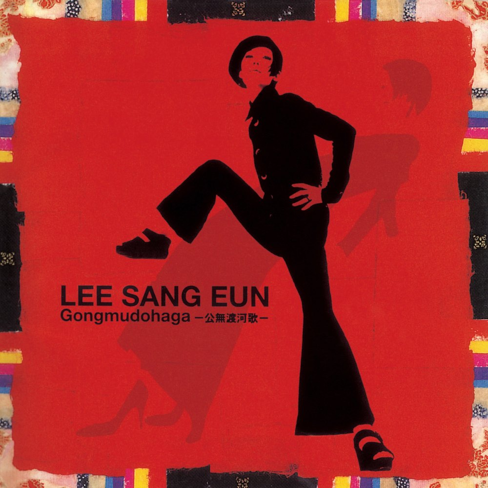

이 지면은 11월 29일 자정에 아카이브로 이관됩니다
대한민국 대중음악 클래식 100

공무도하가
이상은
〈공무도하가〉는 이상은이 1995년 발표한 여섯 번째 앨범 《공무도하가》의 네 번째 곡이자 타이틀곡으로, 이상은이 곡과 노랫말을 썼습니다. 프로듀서 와다 이즈미와 이 곡의 편곡자이자 이후 오랜 음악 동료가 되는 다케다 하지무 등 일본 음악인들과 원더 스테이션 스튜디오에서 녹음했고, 일본 폴리도르에서 먼저 발매한 뒤 한국에는 라이선스로 들여왔습니다.
포크와 월드 뮤직을 오가는 열두 곡을 담은 《공무도하가》는 〈담다디〉의 반짝 스타로 기억되던 이상은이 〈언젠가는〉의 성공에 이어 자신만의 음악 세계를 본격적으로 펼쳐 보인 앨범으로, 아티스트 이상은의 진면목을 보여 준 국내 음악계의 기념비적인 작품 중 하나로 평가받습니다.
사랑하는 이를 잃는 슬픔과 돌이킬 수 없는 이별이 담겨 있는 우리 문학사에서 가장 오래된 시가 가운데 하나인 〈공무도하가(公無渡河歌)〉는 머리가 하얗게 센 사내 백수광부가 강을 건너다 물에 빠져 죽고, 그를 말리던 아내마저 강물에 몸을 던진다는 슬픈 이야기를 담고 있습니다. 지금은 고전문학 시간에 시로 배우지만 당대에는 많은 사람이 유행가처럼 따라 부르던 노래였다는 이야기에서 곡이 시작되었다고 이상은은 발매 당시 한 인터뷰에서 밝혔습니다.
무언가에 홀린 듯 일렁이는 강물 속으로 휘청휘청 걸음을 옮기는 사내와, 먼발치에서 그 모습을 안타깝게 바라보는 아내를 그리는 듯한 북과 피리의 인트로는 이야기의 결말을 예고하듯 엄숙하고 서럽습니다. 이어지는 이상은의 목소리는 슬픔을 받아들이는 것처럼 담담히 이어가지만 이내 감정이 북받치고 아내의 운명마저 암시하는 듯 읊조리며 곡을 마무리합니다. 절제된 악기 배치 속 목소리를 받쳐 주는 피아노와 기타의 모티브가 인상적입니다.
* 대한민국 대중음악 클래식 100의 발행 순서는 작품의 순위나 평가와 무관합니다.
zebra beta · movement 2.